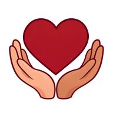
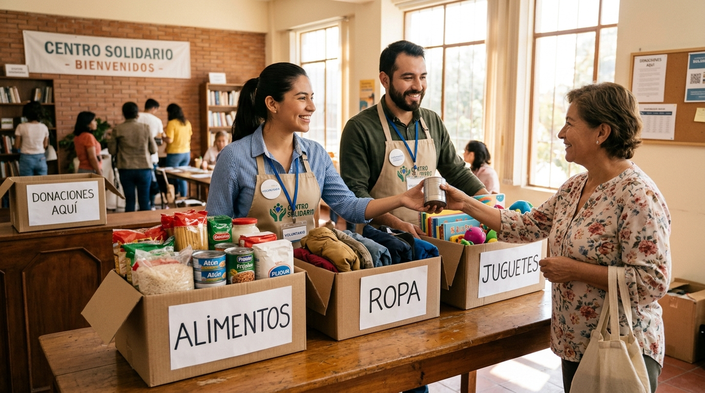

Sector Norte
Mesa comunitaria del Norte
Recepción de alimentos cerrados y ropa limpia.
AlimentosRopa
Dirección: Calle Norte y Pasaje Solidario, entrada principal.
Horario: lunes a viernes, de 09:00 a 13:00.

manossolidariasPuntos de recolección
Consulta los artículos que recibe cada punto y su horario. Llevar tu aporte al lugar adecuado facilita el trabajo de quienes lo reciben.

Elige un artículo para consultar los puntos que lo reciben.
Sector Norte
Recepción de alimentos cerrados y ropa limpia.
Dirección: Calle Norte y Pasaje Solidario, entrada principal.
Horario: lunes a viernes, de 09:00 a 13:00.
Sector Centro
Un espacio de apoyo para reunir prendas y juguetes completos.
Dirección: Avenida Central, patio de ingreso del campus.
Horario: lunes a viernes, de 14:00 a 18:00.
Sector Sur
Recepción de fin de semana para alimentos y juguetes.
Dirección: Pasaje Sur y Calle de la Comunidad, salón barrial.
Horario: sábados, de 09:00 a 12:00.
Pregunta si el punto sigue recibiendo artículos y si tiene condiciones particulares de acceso. Evita dejar bolsas o cajas cuando el equipo no esté presente.
Revisar cómo preparar los artículosConsulta su objetivo, los artículos solicitados y el lugar concreto indicado para la entrega.